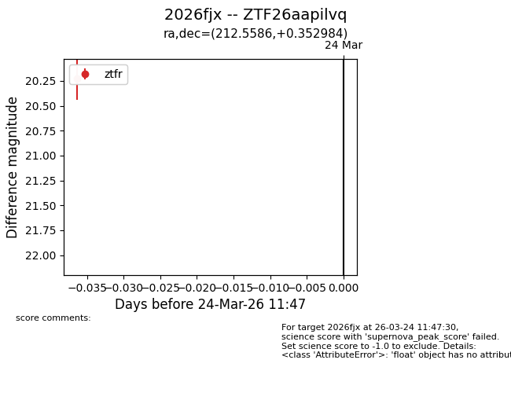
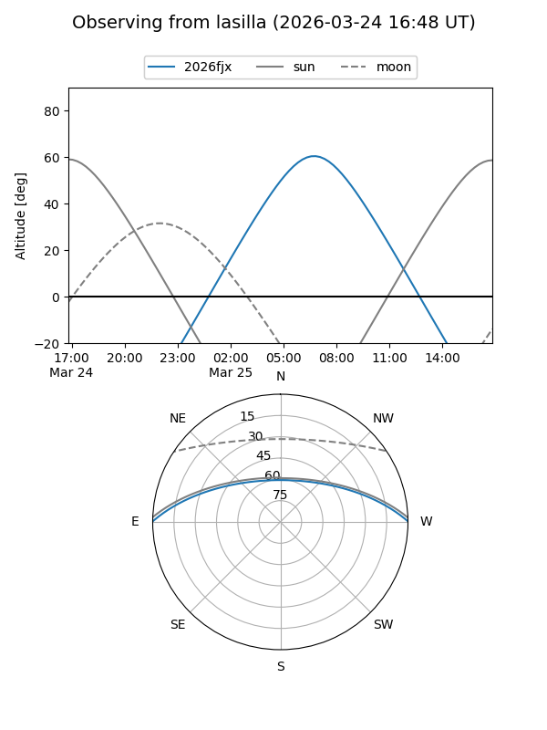
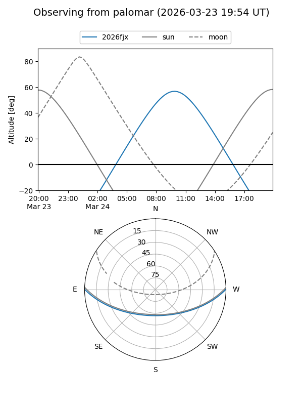

2026fjx
Target 2026fjx at 2026-03-24 11:49
Aliases and brokers:
FINK: link
Lasair: link
ALeRCE: link
TNS: link
YSE: link
alt names
ZTF26aapilvq (ztf,fink_ztf)
2026fjx (tns,yse)
Coordinates:
equatorial (ra, dec) = 212.5586,+0.35298
equatorial (HMS+DMS) = 14:10:14.06,+00:21:10.74
galactic (l, b) = (341.4289,+57.21363)
Flags:
Photometry:
last ztfr=20.23
1 ztfr detections
Lightcurve

Visibility


Additional plots